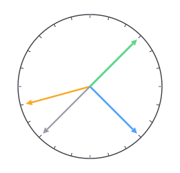
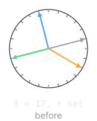
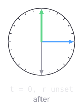

What leaves the node, and what a reset puts back
What a report puts on the frame

(π/12) · t — persisted, position.json
(π/12) · (t + 6) — a link, never stored
(π/12) · (t + 12) — a link, never stored
(π/12) · r — drawn when set, never
persisted
centre · reach · pole · ring axis — a tilt touches none of them
What a reset puts back


the tilt goes to 0 and the other two follow, being links off it
both queues emptied — a direction left waiting would step t straight back off 0
beads still crossing dropped · each node clears twice, and the marker's clear lands last